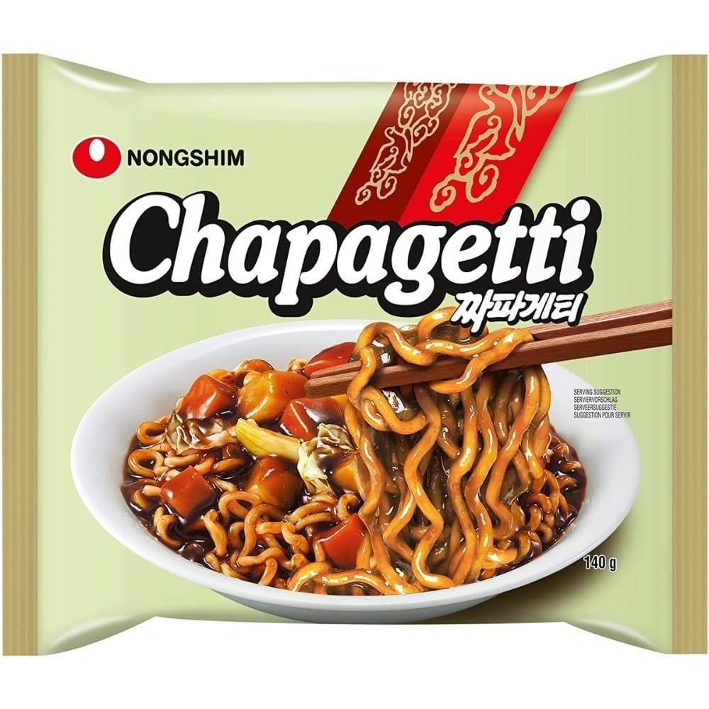
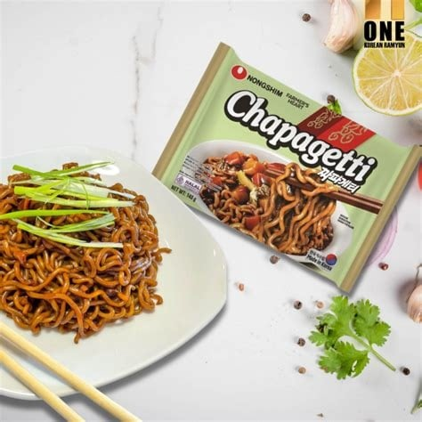
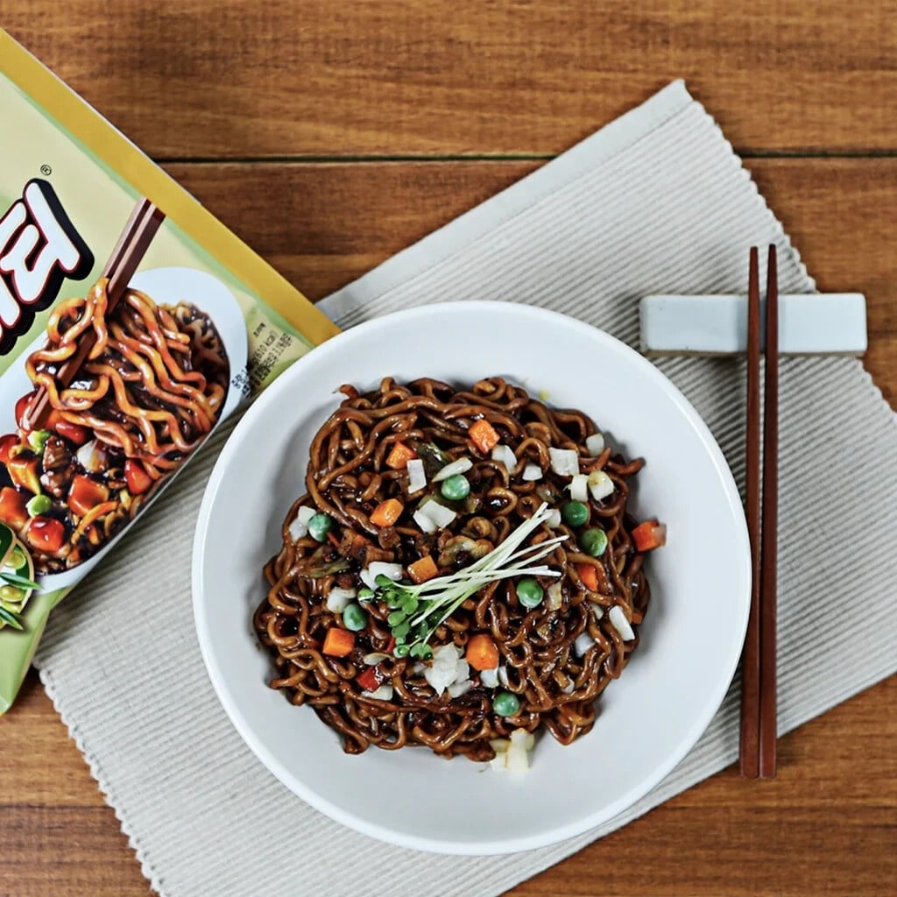

<div> <table style="border-collapse: collapse; width: 99.9809%;" border="1"><colgroup><col style="width: 49.9522%;"><col style="width: 49.9522%;"></colgroup> <tbody> <tr> <td> <div><span style="font-size: 14pt;"><strong>Taiteii instant cu sos de fasole neagra Nongshim Chapagetti, 140g</strong></span></div> <div><span style="font-size: 14pt;">Descoperă Nongshim Chapagetti (140g), tăițeii instant numărul unu &icirc;n Coreea pentru gustul autentic de&nbsp;<i data-path-to-node="2" data-index-in-node="102">Jajangmyeon</i>! Cu o textură densă și un sos bogat de fasole neagră, această porție rapidă &icirc;ți aduce savoarea tradițională coreeană direct &icirc;n farfurie, &icirc;n doar c&acirc;teva minute de preparare.</span></div> </td> <td></td> </tr> <tr> <td style="text-align: center;"></td> <td><span style="font-size: 14pt;">Savoare intensă și un strop de prospețime! Nongshim Chapagetti &icirc;mbină perfect tăițeii ramyun cu sosul cremos și ușor dulceag de fasole neagră. Adaugă puțină ceapă verde proaspătă la final pentru o experiență gourmet asiatică autentică, absolut irezistibilă și gata de savurat acasă.</span></td> </tr> <tr> <td><span style="font-size: 14pt;">Transformă o masă rapidă &icirc;ntr-un festin coreean! Chapagetti se remarcă prin tăițeii săi groși și elastici, perfect acoperiți de un sos aromat. Completează bolul cu mazăre, cubulețe de legume sau topping-ul tău preferat pentru a recrea celebrul preparat confortabil din serialele tale coreene favorite.</span></td> <td></td> </tr> </tbody> </table> </div>